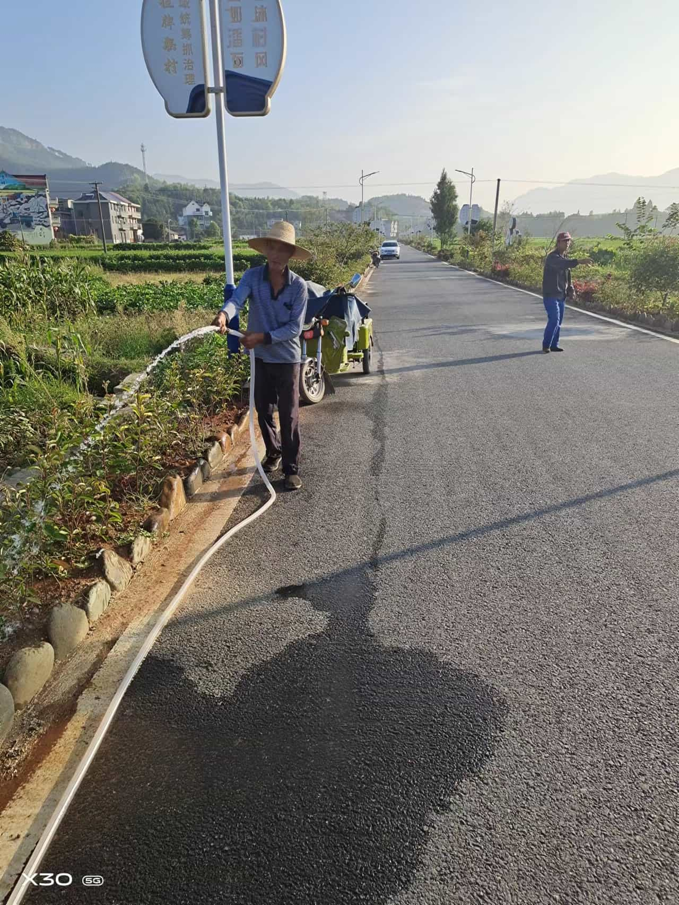

小区绿化养护方案:
1、小区绿化实行专业化管理
小区绿化养护方案及报价小区绿化包括小区现场规划、小区树木栽培、花卉栽培、病虫害防治等多学科知识，是一门专业性很强的学科，所以为了不断提高小区绿化养护的科技量，不断吸收新鲜的管理经验，所以会组建专业的人员对小区绿化按照统-的标准来进行养护管理。
2、人员配备方案
根据小区绿地面积，按照每百平方米设置固定在编人员一人，主要是以男性为主，年龄层次在25-55岁左右。可以根据实际的工作能力适当的放宽政策。在植物生长茂盛的季节，可以根据实际现场工作情况安排部分的临时工，确保工作的质量。对于突发或者专项工作，小区要集中安排完成。

3、绿化质量目标
按照设计的要求采购苗木，按照种植规格栽植苗木，按照管理要求做好栽后养护，争取苗木的成活率达到百分之九十五。
4、小区绿化组织机构及管理机制
日常小区绿化养护管理工作实行统额、分包干、责任落实到人、目标管理、优者留用，劣者淘汰的管理机制，充分的调动和发挥劳动者的积极性和主观能动性。
小区绿化养护费用大概是多少
小区绿化养护报价明细表小区绿化养护预算大概是7.45元/m2/年，其中包含:
1、基本费用3.6749元/m2/年;
2、修剪费用1.1022元/次;
3、施肥费用0.495元/m2/次;
4、松土除草费0.36749元/m2/年；
5、病虫害防治费1.104元/m2/年;
6、税费0.3507元/m2/年;
7、利润0.3547元/m2/年。小区绿化养护收费标准:
1、绿化养护费(价格仅供参考)一级绿地养护费用6-18元/平米/年二级绿地养护费用7.2-3.6元/平米/年:三级绿地养护费用3.6-2.4元/平米/年四级绿地养护费用2.4-1.2元/平米/年
2、养护费用标准所含项目如下:养护管理用工、车辆及动力机械、肥料和药剂等绿化材料。
3、短期绿化养护收费标准(价格仅供参考)
4、临时草坪修剪(价格仅供参考)3000平方米以下的0.8元/平方米/次，
3000-5000平方米的0.5-0.6元/平方米/次，
5000-10000平方米的0.5元/平方米/次，
10000平方米以上的0.3-0.5元/平方米/次。
小区绿化养护预算如下:
一、基本费用:
1、浇水费用:以每平米每年用水1t 计,水费(加排污费) 3.5 元/t,则每m2浇水费用为:1*3.5=3.5元/m2/年。
2、清残花落叶及绿化垃圾:以该项工作占基本工作的15%计，以平均每人管理4000m2计，假定一个绿化工人年工资为18000元，则清残花落叶及绿化垃圾费为:18000/4000*15%=0.675元/m2/年
3、服装费:以平均发放2套工作服，每套300 元计，每人管理4000m2;则服装费为 300*2/4000=0.15元/m2/年
4、工具费:以平均每年每工作区(4000m2)配500元工具计，则工具费为: 500/4000=0.125元/m2/年
5、意外事件处理费:以每年每个工作区(4000m2) 有一个台班(350元)计，平均每m2的处理费为: 350/4000=0.0875元/m2/年。
6、补植及其他费用:按前五项之和乘以20%计，则补植及其他费用为: [(1) + (2)+ (3) + (4) + (5)]*20%=0.9075元/年/m2
7、总基本费用(1)+(2)+(3)+(4)+(5)+(6)=5.445元/年/m2
二、修剪费用:
平均每次每m2修剪费用=基本费*5%=5.445*5%=0.27225元/次. m2。每年修剪6次，则每年修剪费用为0.27225*6-1.6335元/年/m2。
三、施肥费用:
一般以每次复合肥30g算，按5.5
元/kg计，则每次复合肥30克，按5.5元/公斤，则费用为5.5X0.03=0.165元/
(m2/次) 。一年施肥3次,则费用为0.165*3=0.495 元/ (m2/次)
四、松土除草费:
按基本费的10%计，则每年费用为5.445 X10%=0.5445元/ (m2/年)。
五、病虫害防治费:
平均每次按基本费的5%计，每次费用为0.27225元(m2/年) ,每年喷药6次，则费用为0.27225X6=1.6335元/m2/年。
六、税费:
按5.2%税率计,则税费=(1+2+3+4+5)*5.2%=0.23595元/m2/年。
七、利润:
按5%税计,则利润=(1+2+3+4+5+6) X5%=0.27225元/m2/年。
八、总费用:
总费用为_上述各项之和，即9.8142元/m2/年